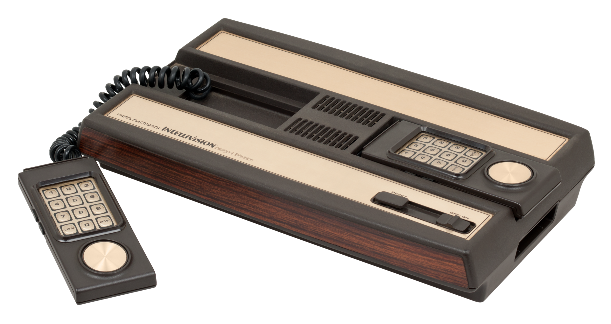
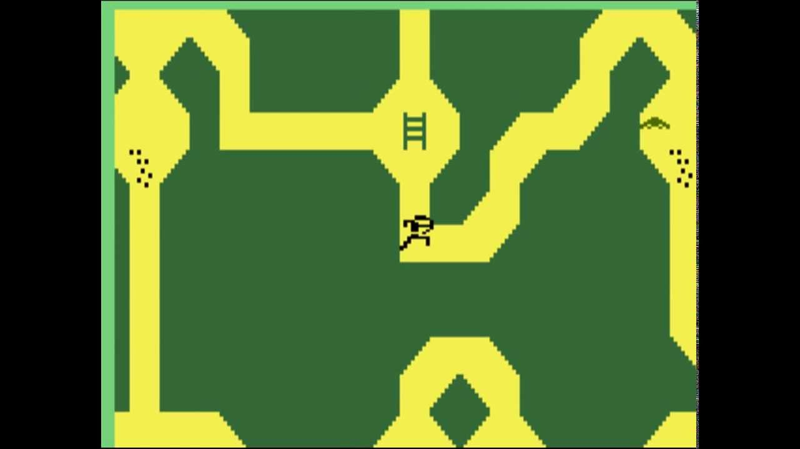

The Console
A bit of History
|
The Intellivision is a home video game console released by Mattel Electronics in 1979. The name Intellivision wants to remember of "intelligent television". Development of the console began in 1977, the same year as the introduction of its main competitor, the Atari 2600. Games development started in 1978 and continued until 1990 when the Intellivision was discontinued. |
 |
The Hardware
The principal features of the Intellivision are:
- 16-bit, 1MHz General Instrument CPU
- 1456 bytes RAM
- 7168 bytes ROM
- 192x160 pixel resolution
- 16 colors range
Games Supported
The games supported by Intellivision are a total of 133; most of theme were sports games, like AutoRacing, Boxing, NBA Basketball and NASL Soccer; but the most popular game of this console is "Las Vegas Pocker & BlackJack, with almost two millions of copies sold. Relevant games of this console are:
- 
- Utopia: the first construction simulation game in the history
- World Series Major League Basketball: the first sport game with 3D graphics and the use of real players statistics
- Advanced Dungeons and Dragons: one of the first RPG games in world history
Impact on the Market and Reception
Important Innovations
Intellivision can say to have several primates, such as:- It is the first 16-bit console, as it has a 16-bit microprocessor
- The first system to feature downloadable games
- The first controller with directional thumb pad
The War against Atari
Right before the launch, Mattel's advertising campaign to support its product was already characterized by a strong aggressiveness and very clear comparisons with its direct competitor Atari 2600, which could not boast such high graphic performance. Intellivision was the first concurrent to threat the position of Atari in the market, using also its market and production strategies, as third part licences for production and selling.
Justice Troubles and Fall
in 1981, after countless delays and missed promises, the Intellivision Keyboard Component was released, with the promise to bring the Console to personal computer status through various upgrades. The keyboard, which was then sold in only a few thousand pieces, had a sale price of $550, not a few. The whole issue of the promise to upgrade the machine, clearly not kept, came in the eyes of the Federal Trade Commission, which began to investigate, In August 1982 the FTC ordered Mattel to pay a daily fine until the promised upgrade was released. At this point the keyboard component was deleted and withdrawn from the market to avoid these legal complications.In 1983, also due to the great crisis of the video game market, Mattel Electronics recorded a loss of 300 million dollars and was closed; surprisingly, however, Intellivision continued on its path until 2004, the year in which it definitively ceased support to this historic console.